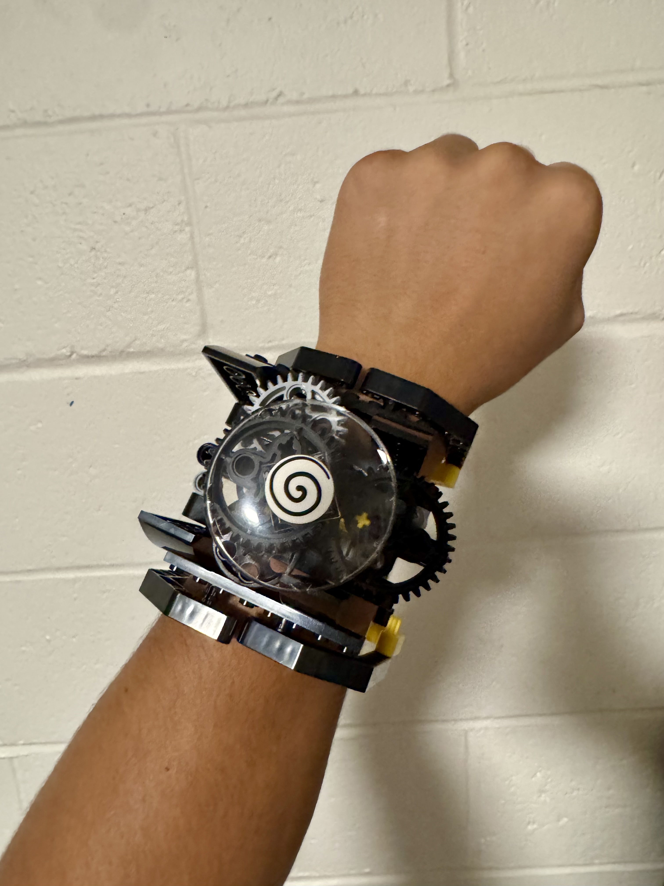
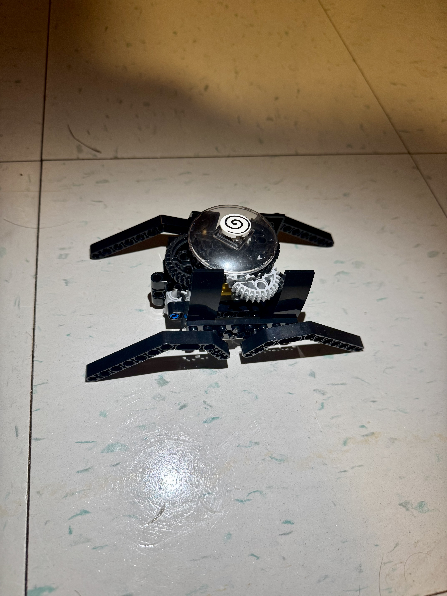
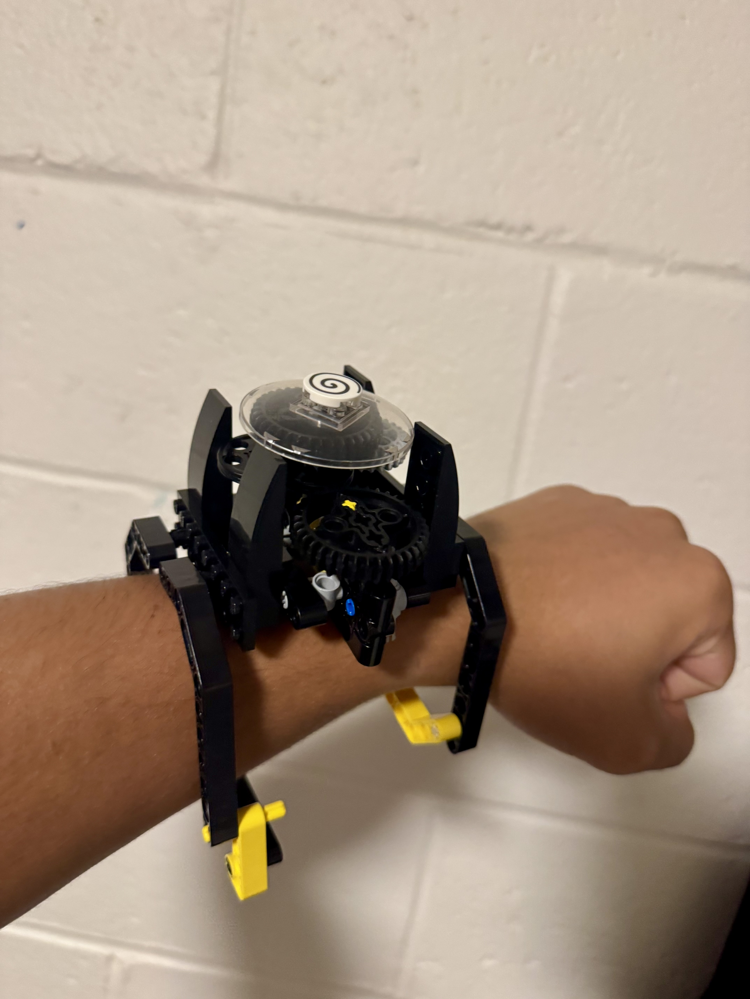

For this first project we were tasked with experimenting with the new lego Spike kits ourselves and creating something that resembles something about our personality. I decided to make a watch because I recently bought my first two watches and I really enjoy wearing them on special occasions (or whenever I feel like it) I just think they’re cool for no reason at all but got inspired to try to make one when I opened the LEGO kit and started experimenting with the gear parts. I had to be pretty persistent with this one because the gears kept falling off and making the band part with one hand was extremely meticulous, but I’m glad I held out.

